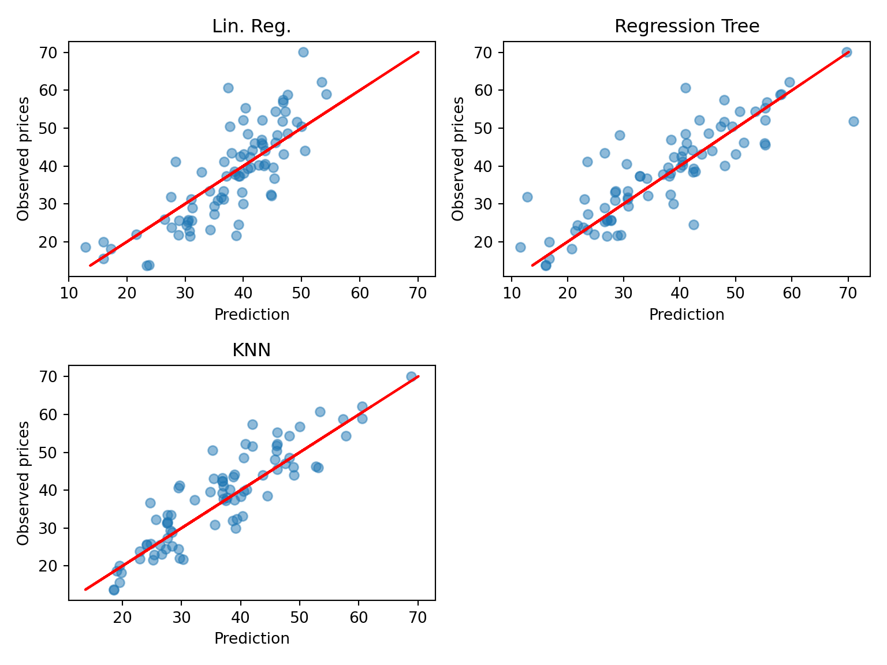
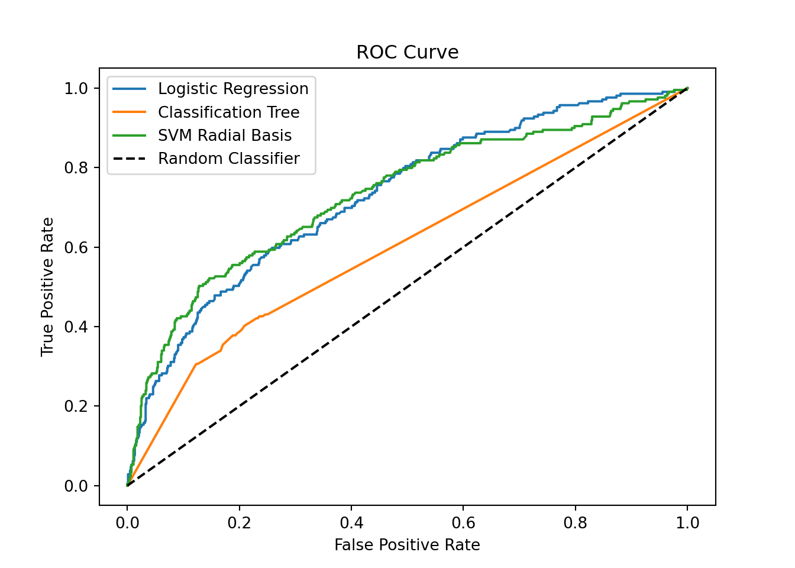

Model scoring
Regression task
Data
The data set is the one used in the series on linear regressions.
Then we split the data in a training and a test set (0.8/0.2). For this, we use the createDataPartition function of the caret package.
Models
We will compare a linear regression, a regression tree and a 3-NN (KNN).
# Load the course python environment as usual with a r code chunks.
library(reticulate)
use_condaenv("MLBA")# Fit the models: linear regression, regression tree, and KNN
from sklearn.linear_model import LinearRegression
from sklearn.tree import DecisionTreeRegressor
from sklearn.neighbors import KNeighborsRegressor
# Define predictors and target variable
predictors = ['TransDate', 'HouseAge', 'Dist', 'NumStores', 'Lat', 'Long']
target = 'Price'
# Fit models
est_lm = LinearRegression().fit(r.df_tr[predictors], r.df_tr[target])
est_rt = DecisionTreeRegressor(random_state=234).fit(r.df_tr[predictors], r.df_tr[target])
est_knn = KNeighborsRegressor(n_neighbors=3).fit(r.df_tr[predictors], r.df_tr[target])R-squared
We now compute the R2 for each model using the a defined function.
[1] 0.6562361
[1] 0.7719796
[1] 0.8079045Just for the exercise, we can compute it by hand (square of the correlation)
# Same thing as the R code
from sklearn.metrics import r2_score
import numpy as np
# Only to demonostrate which argument goes where (different from `caret::R2`)
print(r2_score(y_true = r.df_te[target], y_pred = est_lm.predict(r.df_te[predictors])))
print(r2_score(r.df_te[target], est_rt.predict(r.df_te[predictors])))
print(r2_score(r.df_te[target], est_knn.predict(r.df_te[predictors])))
# Computing it by hand gives us the same result as R
np.corrcoef(est_lm.predict(r.df_te[predictors]), r.df_te[target])[0][1]**20.6424009640449693
0.7018428459476751
0.7971133712172433
np.float64(0.6562360670242778)To understand why the results are different in R2 from our defined function in R vs. sklearn.metrics.r2_score() in Python, see this post on stackoverflow. If you want to recieve the same results in both, you can try computing the R2 not by correlation but by the formula \(1 - \frac{SSR}{SST}\) where \(SSR\) is the sum of squared residuals and \(SST\) is the total sum of squares.
Additionally, please note that the performance of the tree is highly dependent on the seed, so setting a different seed can lead to different results.
RMSE
Now, we compute the RMSE.
[1] 7.498671
[1] 6.088373
[1] 5.659951The formula would be:
from sklearn.metrics import mean_squared_error, root_mean_squared_error
import numpy as np
print(root_mean_squared_error(r.df_te[target], est_lm.predict(r.df_te[predictors])))
# alternatively in the older version of `sklearn`, you had to run the code below
# print(np.sqrt(mean_squared_error(r.df_te[target], est_lm.predict(r.df_te[predictors]))))
print(root_mean_squared_error(r.df_te[target], est_rt.predict(r.df_te[predictors])))
print(root_mean_squared_error(r.df_te[target], est_knn.predict(r.df_te[predictors])))7.498671398473088
6.84713310132913
5.648236408450452MAE
Now, we compute the MAE.
[1] 5.803592
[1] 4.599811
[1] 4.461789The formula would be:
# Compute MAE for each model
from sklearn.metrics import mean_absolute_error
print(mean_absolute_error(r.df_te[target], est_lm.predict(r.df_te[predictors])))
print(mean_absolute_error(r.df_te[target], est_rt.predict(r.df_te[predictors])))
print(mean_absolute_error(r.df_te[target], est_knn.predict(r.df_te[predictors])))5.80359171132348
4.726829268292682
4.4349593495934965Best model
These three measures agree on the fact that the regression tree is the best model. To inspect further the predictions, we use scatterplots:
par(mfrow=c(2,2))
plot(df_te$Price ~ predict(est_lm, newdata = df_te), xlab="Prediction",
ylab="Observed prices", main="Lin. Reg.")
abline(0,1)
plot(df_te$Price ~ predict(est_rt, newdata = df_te), xlab="Prediction",
ylab="Observed prices", main="Lin. Reg.")
abline(0,1)
plot(df_te$Price ~ predict(est_knn, newdata = df_te), xlab="Prediction",
ylab="Observed prices", main="Lin. Reg.")
abline(0,1)
par(mfrow=c(1,1))
# visualize also in Python
import matplotlib.pyplot as plt
plt.figure(figsize=(8, 6))
plt.subplot(221);
plt.scatter(est_lm.predict(r.df_te[predictors]), r.df_te[target], alpha=0.5);
plt.xlabel("Prediction");
plt.ylabel("Observed prices");
plt.title("Lin. Reg.");
plt.plot(r.df_te[target], r.df_te[target], color='red');
plt.subplot(222);
plt.scatter(est_rt.predict(r.df_te[predictors]), r.df_te[target], alpha=0.5);
plt.xlabel("Prediction");
plt.ylabel("Observed prices");
plt.title("Regression Tree");
plt.plot(r.df_te[target], r.df_te[target], color='red');
plt.subplot(223);
plt.scatter(est_knn.predict(r.df_te[predictors]), r.df_te[target], alpha=0.5);
plt.xlabel("Prediction");
plt.ylabel("Observed prices");
plt.title("KNN");
plt.plot(r.df_te[target], r.df_te[target], color='red');
plt.tight_layout();
plt.show()
The scatterplots are in line with the conclusion that KNN is the best, even though it is not easy to declare from a plot. We can in addition see that the regression tree (RT) has made more error on the larger prices.
Classification task
Data
The data set is the visit data (already used in previous exercises). For simplicity, we turn the outcome (visits) into factor. Like before, that are also split into a training and a test set.
Models
We will compare a logistic regression, a classification tree (pruned) and a SVM with radial basis (cost and gamma tuned).
Note that the code for tuning the SVM is provided below in comments because of the time it takes to run. The final parameters have been selected accordingly. Also, the SVM fit includes the argument probability=TRUE to allow the calculations of predicted probabilities later.
library(e1071)
library(adabag)
## Logistic regression
Doc_lr <- glm(visits~., data=df_tr, family="binomial")
Doc_lr <- step(Doc_lr)
## Classification tree
Doc_ct <- autoprune(visits~., data=df_tr)
## SVM radial basis
# grid_radial <- expand.grid(sigma = c(0.0001, 0.001, 0.01, 0.1),
# C = c(0.1, 1, 10, 100, 1000))
# trctrl <- trainControl(method = "cv", number=10)
# set.seed(143)
# Doc_svm <- train(visits ~., data = df_tr, method = "svmRadial",
# trControl=trctrl,
# tuneGrid = grid_radial)
Doc_svm <- svm(visits~., data=df_tr, gamma=0.001, cost=1000, probability=TRUE)Start: AIC=3652.59
visits ~ gender + age + income + illness + reduced + health +
private + freepoor + freerepat + nchronic + lchronic
Df Deviance AIC
- nchronic 1 3629.0 3651.0
- income 1 3630.4 3652.4
<none> 3628.6 3652.6
- lchronic 1 3632.0 3654.0
- freerepat 1 3633.3 3655.3
- private 1 3633.9 3655.9
- age 1 3635.0 3657.0
- gender 1 3636.8 3658.8
- freepoor 1 3637.1 3659.1
- health 1 3637.7 3659.7
- illness 1 3703.2 3725.2
- reduced 1 3779.4 3801.4
Step: AIC=3651.02
visits ~ gender + age + income + illness + reduced + health +
private + freepoor + freerepat + lchronic
Df Deviance AIC
- income 1 3630.8 3650.8
<none> 3629.0 3651.0
- lchronic 1 3632.1 3652.1
- freerepat 1 3633.8 3653.8
- private 1 3634.5 3654.5
- age 1 3636.6 3656.6
- freepoor 1 3637.4 3657.4
- gender 1 3637.5 3657.5
- health 1 3638.2 3658.2
- illness 1 3712.9 3732.9
- reduced 1 3779.9 3799.9
Step: AIC=3650.8
visits ~ gender + age + illness + reduced + health + private +
freepoor + freerepat + lchronic
Df Deviance AIC
<none> 3630.8 3650.8
- lchronic 1 3633.8 3651.8
- private 1 3635.6 3653.6
- freerepat 1 3636.8 3654.8
- freepoor 1 3638.2 3656.2
- age 1 3639.4 3657.4
- health 1 3640.4 3658.4
- gender 1 3641.4 3659.4
- illness 1 3715.8 3733.8
- reduced 1 3781.1 3799.1import pandas as pd
from sklearn.linear_model import LogisticRegression
from sklearn.tree import DecisionTreeClassifier
from sklearn.svm import SVC
# We first put the data in a nice format by one-hot encoding the categorical variables
X_train = pd.get_dummies(r.df_tr.drop('visits', axis=1))
y_train = r.df_tr['visits']
X_test = pd.get_dummies(r.df_te.drop('visits', axis=1))
y_test = r.df_te['visits']
## Logistic regression
doc_lr = LogisticRegression()
doc_lr.fit(X_train, y_train);
## Classification tree
doc_ct = DecisionTreeClassifier(random_state=123)
doc_ct.fit(X_train, y_train);
## SVM radial basis
doc_svm = SVC(kernel='rbf', gamma=0.001, C=1000, probability=True, random_state=123)
doc_svm.fit(X_train, y_train);Predictions
We now compute the predicted probabilities and the predictions of all the models.
Note that, for SVM, we need to extract the attribute “probabilities” from the predicted object. This can be done with the attr function.
## Logistic regression
Doc_lr_prob <- predict(Doc_lr, newdata=df_te, type="response")
Doc_lr_pred <- ifelse(Doc_lr_prob>0.5,"Yes","No")
## Classification tree
Doc_ct_prob <- predict(Doc_ct, newdata=df_te, type="prob")
Doc_ct_pred <- predict(Doc_ct, newdata=df_te, type="class")
## SVM radial basis
library(dplyr)
Doc_svm_prob <- predict(Doc_svm, newdata=df_te, probability=TRUE) %>% attr("probabilities")
Doc_svm_pred <- predict(Doc_svm, newdata=df_te, type="class")## Logistic regression
## the second column represents the `no` values, to make sure of that, you can run `doc_lr.classes_`
doc_lr_prob = doc_lr.predict_proba(X_test)[:,1]
doc_lr_pred = np.where(doc_lr_prob>0.5, "Yes", "No")
## Classification tree
doc_ct_prob = doc_ct.predict_proba(X_test)[:,1]
doc_ct_pred = doc_ct.predict(X_test)
## SVM radial basis
doc_svm_prob = doc_svm.predict_proba(X_test)[:,1]
doc_svm_pred = doc_svm.predict(X_test)Confusion matrices & prediction-based measures
The confusionMatrix function provides all the accuracy measures that we want.
Confusion Matrix and Statistics
Reference
Prediction No Yes
No 809 179
Yes 19 30
Accuracy : 0.8091
95% CI : (0.7838, 0.8326)
No Information Rate : 0.7985
P-Value [Acc > NIR] : 0.2089
Kappa : 0.1689
Mcnemar's Test P-Value : <2e-16
Sensitivity : 0.9771
Specificity : 0.1435
Pos Pred Value : 0.8188
Neg Pred Value : 0.6122
Prevalence : 0.7985
Detection Rate : 0.7801
Detection Prevalence : 0.9527
Balanced Accuracy : 0.5603
'Positive' Class : No
Confusion Matrix and Statistics
Reference
Prediction No Yes
No 791 149
Yes 37 60
Accuracy : 0.8206
95% CI : (0.7959, 0.8435)
No Information Rate : 0.7985
P-Value [Acc > NIR] : 0.03934
Kappa : 0.3031
Mcnemar's Test P-Value : 3.988e-16
Sensitivity : 0.9553
Specificity : 0.2871
Pos Pred Value : 0.8415
Neg Pred Value : 0.6186
Prevalence : 0.7985
Detection Rate : 0.7628
Detection Prevalence : 0.9065
Balanced Accuracy : 0.6212
'Positive' Class : No
Confusion Matrix and Statistics
Reference
Prediction No Yes
No 802 159
Yes 26 50
Accuracy : 0.8216
95% CI : (0.7969, 0.8444)
No Information Rate : 0.7985
P-Value [Acc > NIR] : 0.03302
Kappa : 0.2727
Mcnemar's Test P-Value : < 2e-16
Sensitivity : 0.9686
Specificity : 0.2392
Pos Pred Value : 0.8345
Neg Pred Value : 0.6579
Prevalence : 0.7985
Detection Rate : 0.7734
Detection Prevalence : 0.9267
Balanced Accuracy : 0.6039
'Positive' Class : No
from sklearn.metrics import confusion_matrix, accuracy_score, balanced_accuracy_score, cohen_kappa_score
## Logistic regression
print(confusion_matrix(y_test, doc_lr_pred))
print(f"Accuracy: {accuracy_score(y_test, doc_lr_pred):.3f}")
print(f"Kappa: {cohen_kappa_score(y_test, doc_lr_pred):.3f}")
print(f"Balanced accuracy: {balanced_accuracy_score(y_test, doc_lr_pred):.3f}")
## Classification tree
print(confusion_matrix(y_test, doc_ct_pred))
print(f"Accuracy: {accuracy_score(y_test, doc_ct_pred):.3f}")
print(f"Kappa: {cohen_kappa_score(y_test, doc_ct_pred):.3f}")
print(f"Balanced accuracy: {balanced_accuracy_score(y_test, doc_ct_pred):.3f}")
## SVM radial basis
print(confusion_matrix(y_test, doc_svm_pred))
print(f"Accuracy: {accuracy_score(y_test, doc_svm_pred):.3f}")
print(f"Kappa: {cohen_kappa_score(y_test, doc_svm_pred):.3f}")
print(f"Balanced accuracy: {balanced_accuracy_score(y_test, doc_svm_pred):.3f}")[[809 19]
[179 30]]
Accuracy: 0.809
Kappa: 0.169
Balanced accuracy: 0.560
[[724 104]
[145 64]]
Accuracy: 0.760
Kappa: 0.195
Balanced accuracy: 0.590
[[808 20]
[169 40]]
Accuracy: 0.818
Kappa: 0.228
Balanced accuracy: 0.584Different results for the tree and CSV due to randomness, but even with that, SVM remains the best model in terms of accuracy.
The conclusion may be different from one measure to another
- Accuracy: the SVM reaches the highest accuracy
- Kappa: the CT is the highest.
- Balanced accuracy: the CT is the highest.
- etc.
Looking at the confusion matrix, we see that the data is highly unbalanced (many more “No” than “Yes”). Therefore, measures like balanced accuracy and kappa are interesting because they take this characteristics into account. This shows that the CT is probably better than the SVM because it reaches a better balance between predicting “Yes” and “No”.
By looking at the sensitivity and specificity (!! here the positive class is “No”), we see that the best model to recover the “No” is the logistic regression (largest sensitivity) and the best model to recover the “Yes” is the classification tree (largest specificity).
Probability-based measures
To compute the AUC (area under the ROC curve) we can use the caret::twoClassSummary function. The use of this function can be tricky. Its argument should be a data frame with columns (names are fixed):
- “obs”: the observed classes
- “pred”: the predicted classes
- two columns with names being the levels of the classes, here “Yes” and “No”, containing the predicted probabilities.
df_pred_lr <- data.frame(obs=df_te$visits,
Yes=Doc_lr_prob,
No=1-Doc_lr_prob,
pred=as.factor(Doc_lr_pred))
head(df_pred_lr)
df_pred_ct <- data.frame(obs=df_te$visits,
Doc_ct_prob,
pred=as.factor(Doc_ct_pred))
head(df_pred_ct)
df_pred_svm <- data.frame(obs=df_te$visits,
Doc_svm_prob,
pred=as.factor(Doc_svm_pred))
head(df_pred_svm) obs Yes No pred
6 Yes 0.43567107 0.5643289 No
11 Yes 0.08350891 0.9164911 No
12 Yes 0.16600203 0.8339980 No
13 Yes 0.55658181 0.4434182 Yes
14 Yes 0.47463795 0.5253620 No
15 Yes 0.19414583 0.8058542 No
obs No Yes pred
6 Yes 0.8437079 0.1562921 No
11 Yes 0.8437079 0.1562921 No
12 Yes 0.8437079 0.1562921 No
13 Yes 0.3785311 0.6214689 Yes
14 Yes 0.3785311 0.6214689 Yes
15 Yes 0.8437079 0.1562921 No
obs Yes No pred
6 Yes 0.2263059 0.7736941 No
11 Yes 0.1619207 0.8380793 No
12 Yes 0.1622321 0.8377679 No
13 Yes 0.7072647 0.2927353 Yes
14 Yes 0.6285501 0.3714499 Yes
15 Yes 0.2273475 0.7726525 NoThen we pass these objects to the function, and levels of the classes to be predicted (for the function to be able to recover them in the data frame). The function compute the AUC by default (under the name ROC_.. not very wise) as well as sensitivity and specificity (that we already have).
ROC Sens Spec
0.7320170 0.9770531 0.1435407
ROC Sens Spec
0.6261673 0.9553140 0.2870813
ROC Sens Spec
0.7189631 0.9685990 0.2392344 This brings us another view: the logistic regression has the highest AUC. This shows that varying the prediction threshold provides a good potential of improving the specificity and the sensitivity (in fine, the balanced accuracy).
Now we compute the entropy using the mnLogLoss function (entropy is also called log-loss).
logLoss
0.4492389
logLoss
0.4596595
logLoss
0.4545877 Here again, the entropy selects the logistic regression as the best model, though close to classification tree and SVM.
from sklearn.metrics import roc_auc_score, roc_curve
## Logistic regression
print(f"AUC: {roc_auc_score(y_test, doc_lr_prob):.3f}")
## Classification tree
print(f"AUC: {roc_auc_score(y_test, doc_ct_prob):.3f}")
## SVM radial basis
print(f"AUC: {roc_auc_score(y_test, doc_svm_prob):.3f}")
# Now we compute the entropy using the `log_loss` function (entropy is also called *log-loss*).
from sklearn.metrics import log_loss
## Logistic regression
print(f"Log-loss: {log_loss(y_test, doc_lr_prob):.3f}")
## Classification tree
print(f"Log-loss: {log_loss(y_test, doc_ct_prob):.3f}")
## SVM radial basis
print(f"Log-loss: {log_loss(y_test, doc_svm_prob):.3f}")AUC: 0.729
AUC: 0.602
AUC: 0.732
Log-loss: 0.450
Log-loss: 7.688
Log-loss: 0.462ROC curve & prob threshold tuning
To go deeper in the analysis, we now produce the ROC curve of each model using the roc function of the proc package.

The plotting function provides an “optimal” threshold that reaches the best trade-off between sensitivity and specificity (according to some criterion). We see that there is room to improve this trade-off.
Now, to tune this threshold, we need to do it on the training set to avoid overfitting. To do this, we just repeat the previous calculations (predictions) on the training set. To simplify, we only do this on the logistic regression (note that you can try on the other models; you may find that logistic regression is the best one).
Doc_lr_prob_tr <- predict(Doc_lr, newdata=df_tr, type="response")
df_pred_lr_tr <- data.frame(obs=df_tr$visits,
Yes=Doc_lr_prob_tr)
ROC_lr_tr <- roc(obs ~ Yes, data=df_pred_lr_tr)
plot(ROC_lr_tr, print.thres="best")
The best threshold is 0.193. Now let us compute the confusion table with this threshold.
Confusion Matrix and Statistics
Reference
Prediction No Yes
No 595 79
Yes 233 130
Accuracy : 0.6991
95% CI : (0.6702, 0.7269)
No Information Rate : 0.7985
P-Value [Acc > NIR] : 1
Kappa : 0.2671
Mcnemar's Test P-Value : <2e-16
Sensitivity : 0.7186
Specificity : 0.6220
Pos Pred Value : 0.8828
Neg Pred Value : 0.3581
Prevalence : 0.7985
Detection Rate : 0.5738
Detection Prevalence : 0.6500
Balanced Accuracy : 0.6703
'Positive' Class : No
We now have a model with an accuracy of circa \(70\%\) but with a balanced accuracy of \(67\%\). Far from perfect, this is still an interesting improvement compare to the CT \(62\%\). The specificity and sensitivity are now respectively \(62\%\) and \(72\%\). The specificity in particular made a huge improvement (from around \(29\%\) at best - by CT - to \(62\%\) - by log. reg).
If the aim is to predict both “Yes” and “No”, this last model (log. reg. with tuned threshold) is the best one to use.
## Logistic regression
## We need to turn back our results into binary values to be plotted
doc_lr_prob_dict = {'Yes': 1, 'No': 0}
y_test_binary = np.array([doc_lr_prob_dict[x] for x in y_test])
fpr_lr, tpr_lr, thresholds_lr = roc_curve(y_test_binary, doc_lr_prob)
plt.plot(fpr_lr, tpr_lr, label="Logistic Regression");
## Classification tree
doc_ct_prob_dict = {'Yes': 1, 'No': 0}
y_test_binary = np.array([doc_ct_prob_dict[x] for x in y_test])
fpr_ct, tpr_ct, thresholds_ct = roc_curve(y_test_binary, doc_ct_prob)
plt.plot(fpr_ct, tpr_ct, label="Classification Tree");
## SVM radial basis
doc_svm_prob_dict = {'Yes': 1, 'No': 0}
y_test_binary = np.array([doc_svm_prob_dict[x] for x in y_test])
fpr_svm, tpr_svm, thresholds_svm = roc_curve(y_test_binary, doc_svm_prob)
# Clear the last plot (if any)
# plt.clf()
plt.plot(fpr_svm, tpr_svm, label="SVM Radial Basis");
# Plot the ROC curve
plt.plot([0, 1], [0, 1], 'k--', label="Random Classifier");
plt.xlabel("False Positive Rate");
plt.ylabel("True Positive Rate");
plt.title("ROC Curve");
plt.legend();
plt.show()
We can then plot the results in the similar way to R:
doc_lr_prob_tr = doc_lr.predict_proba(X_train)[:,1]
doc_lr_prob_tr_dict = {'Yes': 1, 'No': 0}
y_train_binary = np.array([doc_lr_prob_tr_dict[x] for x in y_train])
fpr_lr_tr, tpr_lr_tr, thresholds_lr_tr = roc_curve(y_train_binary, doc_lr_prob_tr)
optimal_idx = np.argmax(tpr_lr_tr - fpr_lr_tr)
optimal_threshold = thresholds_lr_tr[optimal_idx]
print(f"Optimal threshold: {optimal_threshold:.3f}")Optimal threshold: 0.188Finally, we print the confusion matrix again:
doc_lr_pred_opt = np.where(doc_lr_prob > optimal_threshold, "Yes", "No")
print(confusion_matrix(y_test, doc_lr_pred_opt))[[578 250]
[ 80 129]]The logistic regression produced with R was better.
Your turn
Classification
Repeat the analysis on the German credit data. Put several models in competition. Tune them and try to optimize their threshold. Select the best one and analyze its performance.
Regression
Repeat the analysis on the nursing cost data. Put several models in competition. Tune them and select the best one. Analyze its performance using a scatterplot.